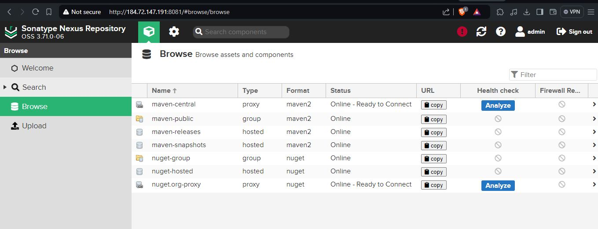

VProfile
Project Overview
When a developer pushes updated code to the Git master branch, the CI/CD pipeline automatically initiates the following processes: code checkout, compilation, testing, packaging, and containerization. The code undergoes testing with SonarQube, where a quality gate is configured with a bug threshold of 60. If the application does not pass this quality gate, the issue is flagged and communicated back to the developer. Once the application successfully passes all tests, it is uploaded to Nexus for further use.
The company’s goal is to deliver the product updates frequently to production automatically with High quality & Reliability. They also want to accelerate software delivery speed, quality and reducing feedback time between developers and testers.
Technologies Used
- Git - For version control for tracking changes in the code files
- Maven – For Continuous Build
- Jenkins - For continuous integration and continuous deployment
- Docker - For deploying containerized applications
- SonarQube - Configuration management tools
- Nexus - For creation of infrastructure.
My Role
Create an EC2 instance with below properties
Jenkins t2.medium | 8Gb RAM | Ubuntu 22.04 LTS
SonarQube t2.medium | 8Gb RAM | Ubuntu 22.04 LTS
Nexus3 t2.medium | 10Gb RAM | Cento OS 9/7
Setup Jenkins server
Install Java as a dependency
Visit www.jenkins.io to install Jenkins
sudo apt update
sudo apt install openjdk-17-jre -y
sudo wget -O /usr/share/keyrings/jenkins-keyring.asc \
https://pkg.jenkins.io/debian-stable/jenkins.io-2023.key
echo "deb [signed-by=/usr/share/keyrings/jenkins-keyring.asc]" \
https://pkg.jenkins.io/debian-stable binary/ | sudo tee \
/etc/apt/sources.list.d/jenkins.list > /dev/null
sudo apt-get update
sudo apt-get install jenkins -y

install git, maven & docker
sudo apt install git
sudo apt install maven -y
sudo apt install docker.io -y
Setup SonarQube server
Install Prerequisites: Update packages and install OpenJDK 17 and PostgreSQL.
Configure PostgreSQL: Create a database and user for SonarQube.
Download SonarQube: Get SonarQube from the official website and extract it.
Configure SonarQube: Update sonar.properties with your database details.
Start SonarQube: Navigate to the SonarQube directory and start the service.
Visit the LINK
to get installtion procedure

Setup Nexus server
Install Java: Ensure Java is installed (sudo apt-get install openjdk-11-jdk).
Create Nexus User: Create a new user (sudo adduser nexus) and grant permissions.
Configure Nexus: Edit the Nexus configuration file to specify the installation directory:
Start Nexus: sudo -u nexus /opt/nexus-latest/bin/nexus start
Access Nexus Repository Manager: Open a web browser and navigate to http://your-server-ip:8081. You should see the Nexus Repository Manager web interface.
Visit the github to get installtion procedure or refer: link

Create respository
Go to setting --> Repository --> Create repositories --> Maven(hosted) to store artifact
Create Pipeline
Create a Job in jenkis UI and Build the pipeline
integrate SonarQube to the Jenkins Pipeline
Install Jenkins Plugin - SonarQube Scanner
Add SonarQube in Jenkins global tool configuration -Dashboard --> Manage Jenkins --> tools --> SonarQube Scanner(select4.7 Version)
Jenkins Global configuration - Dashboard --> Manage Jenkins --> System --> add url http://pub_IP:80
Add Token
Get token from sonar, go to My account --> Security -->enter token name and generate token
In Jenkins add authorization token kind -Secret text, give any id and discription
Write pipeline stage for SonarQube as shown blow
stage('Sonar Analysis') {
environment {
scannerHome = tool 'sonar4.7'
}
steps {
withSonarQubeEnv('sonar') {
sh '''${scannerHome}/bin/sonar-scanner -Dsonar.projectKey=vprofile \
-Dsonar.projectName=vprofile \
-Dsonar.projectVersion=1.0 \
-Dsonar.sources=src/ \
-Dsonar.java.binaries=target/test-classes/com/visualpathit/account/controllerTest/ \
-Dsonar.junit.reportsPath=target/surefire-reports/ \
-Dsonar.jacoco.reportsPath=target/jacoco.exec \
-Dsonar.java.checkstyle.reportPaths=target/checkstyle-result.xml'''
}
}
}
Setup SonarQube Quality Gates
SonarQube Quality Gates are a set of conditions that a codebase must meet before being considered acceptable for release or further development. These conditions are used to enforce code quality standards by automatically analyzing the code for potential issues and ensuring that it meets specific criteria before moving forward in the development process.
SonarQube UI --> Click on quality gates --> Create --> Add "Bug" threshold as 60
To link the quality gate to project
go to project ->project settings->select the quality gates
SonarQube server will send the information of the quality check through webhook
Click on project settings --> webhooks --> url: http://jnkn_pvt_IP:8080/sonarqube-webhook

Add below stage to the pipeline.
stage("Quality Gate") {
steps {
timeout(time: 1, unit: 'HOURS') {
// Parameter indicates whether to set pipeline to UNSTABLE if Quality Gate fails
// true = set pipeline to UNSTABLE, false = don't
waitForQualityGate abortPipeline: true
}
}
}

integrate NEXUS to the Jenkins Pipeline
Setup Jenkins credentials - Jenkins --> dashboard --> manage Jenkins --> manage credetntials